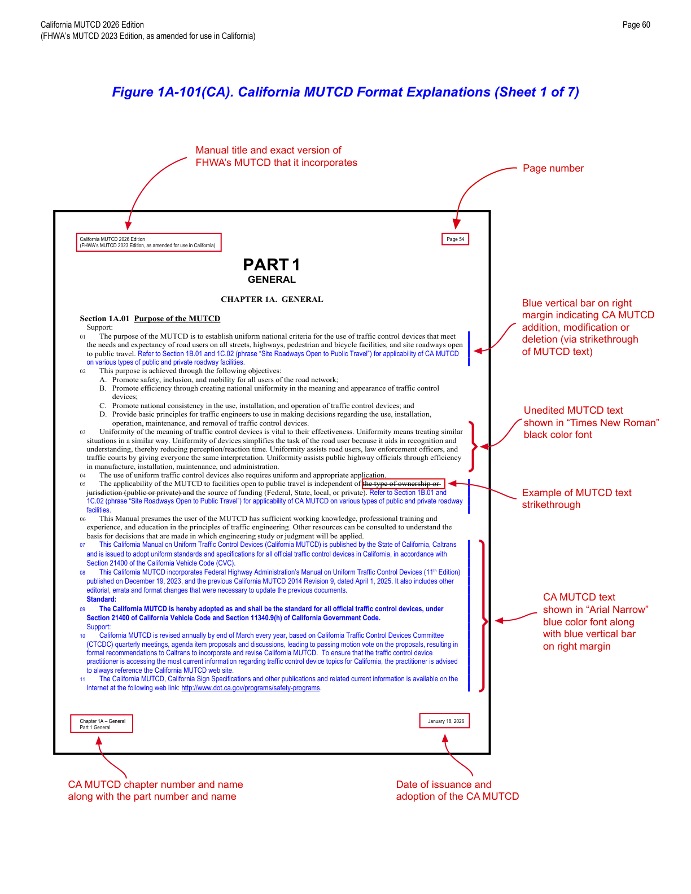
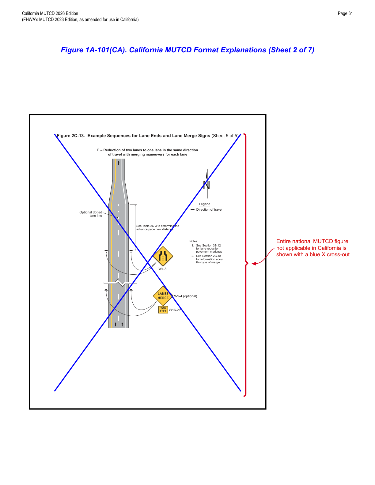
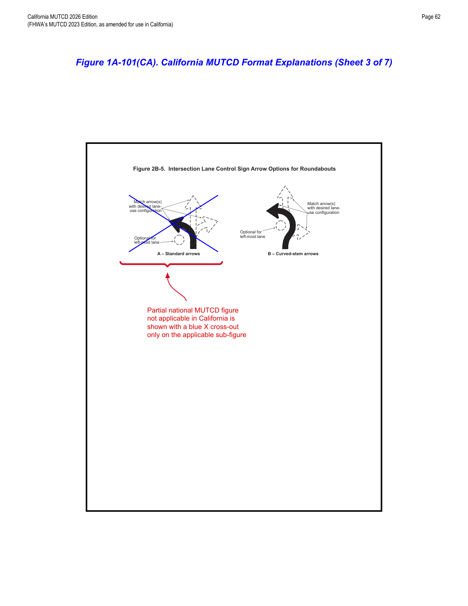
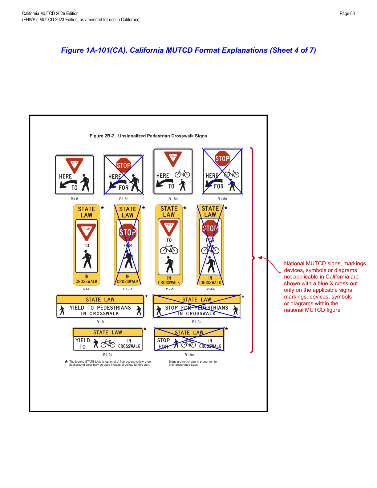
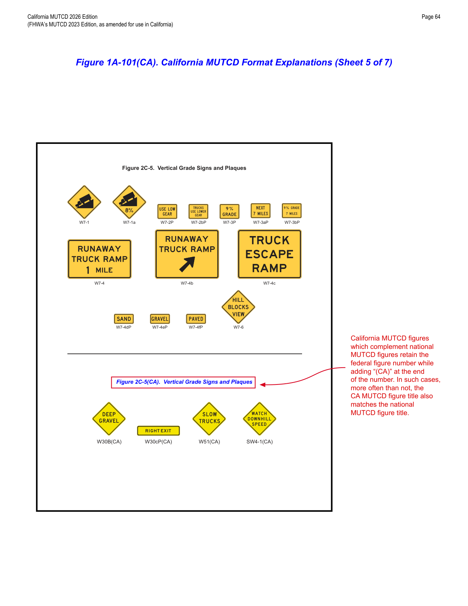
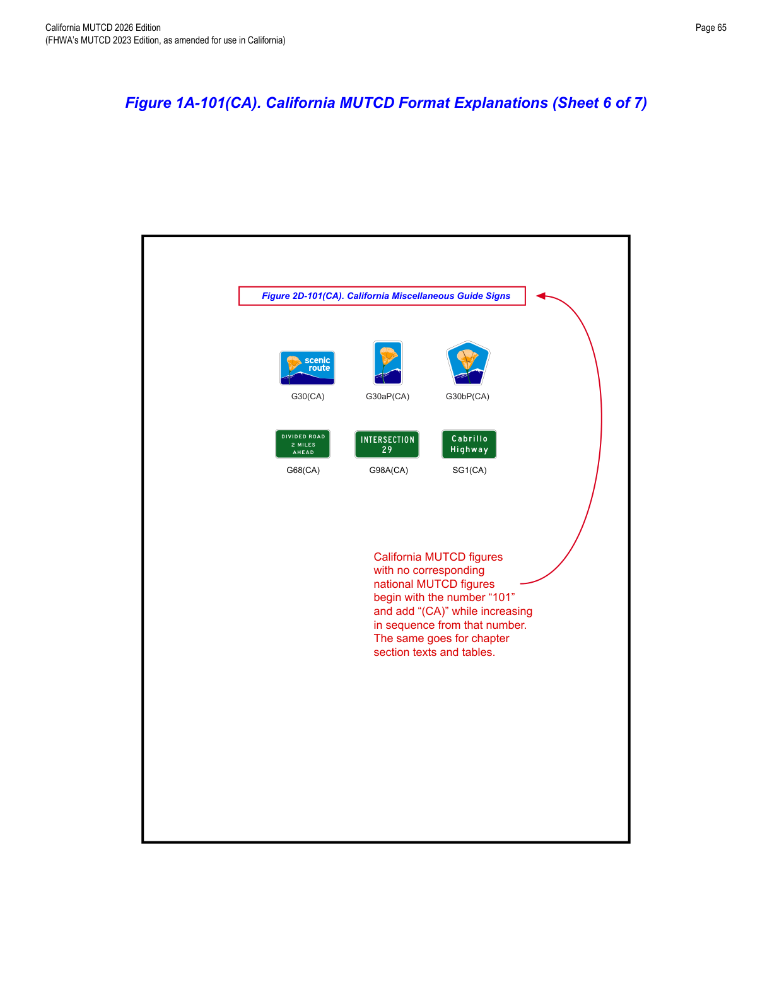
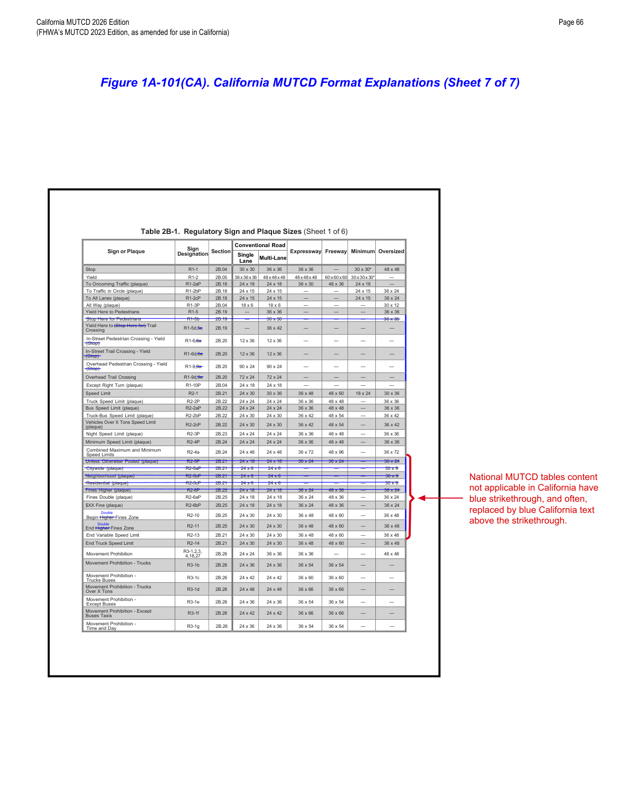

Part 1 · General · Chapter 1A
General
Establishes the purpose, legal basis, and scope of the California MUTCD, defines who and what it applies to, explains how the California document is formatted relative to the National MUTCD, and identifies related publications.
1A.01Purpose of the MUTCD
- 01The purpose of the MUTCD is to establish uniform national criteria for the use of traffic control devices that meet the needs and expectancy of road users on all streets, highways, pedestrian and bicycle facilities, and site roadways open to public travel. See Section 1B.01 and 1C.02 (phrase "Site Roadways Open to Public Travel") for the applicability of the CA MUTCD to various types of public and private roadway facilities.
- 02This purpose is achieved through the following objectives: (A) Promote safety, inclusion, and mobility for all users of the road network; (B) Promote efficiency through creating national uniformity in the meaning and appearance of traffic control devices; (C) Promote national consistency in the use, installation, and operation of traffic control devices; and (D) Provide basic principles for traffic engineers to use in making decisions regarding the use, installation, operation, maintenance, and removal of traffic control devices.
- 03Uniformity of the meaning of traffic control devices is vital to their effectiveness. Uniformity means treating similar situations in a similar way. Uniformity of devices simplifies the task of the road user because it aids in recognition and understanding, thereby reducing perception/reaction time. Uniformity assists road users, law enforcement officers, and traffic courts by giving everyone the same interpretation. Uniformity assists public highway officials through efficiency in manufacture, installation, maintenance, and administration.
- 04The use of uniform traffic control devices also requires uniform and appropriate application.
- 05The applicability of the MUTCD to facilities open to public travel is independent of the type of ownership or jurisdiction (public or private) and the source of funding (Federal, State, local, or private). See Section 1B.01 and 1C.02 (phrase "Site Roadways Open to Public Travel") for applicability of the CA MUTCD on various types of public and private roadway facilities.
- 06This Manual presumes the user has sufficient working knowledge, professional training and experience, and education in the principles of traffic engineering. Other resources can be consulted to understand the basis for decisions in which engineering study or judgment will be applied.
- 07This California Manual on Uniform Traffic Control Devices (California MUTCD) is published by the State of California, Caltrans, and is issued to adopt uniform standards and specifications for all official traffic control devices in California, in accordance with Section 21400 of the California Vehicle Code (CVC).
- 08This California MUTCD incorporates the Federal Highway Administration's Manual on Uniform Traffic Control Devices (11th Edition), published December 19, 2023, and the previous California MUTCD 2014 Revision 9, dated April 1, 2025. It also includes other editorial, errata, and format changes necessary to update the previous documents.
- 09The California MUTCD is hereby adopted as and shall be the standard for all official traffic control devices, under Section 21400 of the California Vehicle Code and Section 11340.9(h) of the California Government Code.
- 10California MUTCD is revised annually by the end of March every year, based on California Traffic Control Devices Committee (CTCDC) quarterly meetings, agenda item proposals and discussions, leading to a passing motion vote on the proposals, resulting in formal recommendations to Caltrans to incorporate and revise the California MUTCD. To ensure the practitioner is accessing the most current information, the practitioner is advised to always reference the California MUTCD website.
- 11The California MUTCD, California Sign Specifications, and other publications and related current information are available on the Internet at http://www.dot.ca.gov/programs/safety-programs.
1A.02Traffic Control Devices — General Description
- 01As defined in Section 1C.02, traffic control devices include all signs, signals, markings, channelizing devices, or other devices that use colors, shapes, symbols, words, sounds, and/or tactile information for the primary purpose of communicating a regulatory, warning, or guidance message to road users on a street, highway, pedestrian facility, bikeway, pathway, or site roadway open to public travel.
- 02Infrastructure elements that restrict a road user's travel path or vehicle speed — such as islands, curbs, speed humps, and other raised roadway surfaces — are not traffic control devices. Transverse or longitudinal rumble strips are also not traffic control devices. Operational devices associated with traffic control strategies, such as fencing, roadway lighting, barriers, and attenuators, are shown in this Manual for context, but their design, application, and usage are not specified since they are not traffic control devices.
- 03Certain signs and devices without a traffic control purpose are sometimes placed within the highway right-of-way by, or with the permission of, the public agency or official having jurisdiction. These are not considered traffic control devices and are not covered by this Manual, including: (A) devices assisting highway maintenance personnel (e.g., snowplow guide markers, culvert/drop inlet identifiers, maintenance/mowing location markers); (B) devices assisting fire or law enforcement personnel (e.g., fire hydrant markers, fire/water district boundary signs, speed measurement pavement markings, red-light enforcement indicator lights, photo enforcement systems); (C) devices assisting utility company personnel and highway contractors (e.g., underground utility markers); (D) signs posting local non-traffic ordinances; and (E) signs giving civic organization meeting information.
1A.03Target Road Users
- 01Traffic control devices can be targeted at operators of motor vehicles, including driving automation systems, and at vulnerable road users.
- 02Targeted operators of motor vehicles include motorists, public transportation operators, truck drivers, and motorcyclists. Targeted users also include vulnerable road users, who have little to no protection from crash forces. These users are defined in Title 23, U.S.C. 148(a), and include bicyclists and pedestrians, including persons with disabilities (who might be blind or vision-impaired, have mobility limitations, or have other impairments). Protection of vulnerable users is a priority in this Manual as directed in Section 11135 of the Infrastructure Investment and Jobs Act.
- 03Operators of motor vehicles and vulnerable road users are both likely to be present on roadways where adjacent land use suggests trips could be served by varied modes. Applying traffic control devices on these roadways requires careful consideration of measures to set and design for appropriate speeds; separation of various users in time and space; improvement of connectivity and access for pedestrians, bicyclists, and transit riders, including people with disabilities; and implementation of safety countermeasures.
1A.04Use of the MUTCD
- 01Traffic control device principles in the MUTCD are developed for and used by individuals who are duly authorized and qualified to conduct traffic control device activities.
- 02Where the content of this Manual requires a decision for implementation, such decisions shall be made by an engineer, or an individual under the supervision of an engineer, who has the appropriate levels of experience and expertise to make the traffic control device decision. Those decisions shall be made using engineering judgment or engineering study, as required by the MUTCD provision.
- 03Section 1C.02 contains the definitions of "engineering study" and "engineering judgment."
- 04In making traffic control device decisions, individuals should consider the impacts of the decision on the following: safety and operational efficiency (mobility) of all road users at that location, the effective use of agency resources, cost-effectiveness, and enforcement and education aspects of traffic control devices.
- 05Throughout this Manual the headings Standard, Guidance, Option, and Support — defined in Section 1C.01 — are used to classify the nature of the text that follows. Figures and tables, including their notes, supplement the text and might themselves constitute a Standard, Guidance, Option, or Support. The user needs to refer to the appropriate text to classify the nature of the figure, table, or note.
- 06Except when a specific numeral is required or recommended by the text of a Section, numerals displayed on device images in the figures that specify quantities such as times, distances, speed limits, and weights should be regarded as examples only. When installing any of these devices, the numerals should be appropriately altered to fit the specific situation.
- 07Similarly, destination names, route numbers, and State route shields displayed on device images in the figures should be regarded as examples only, and should be appropriately altered to fit the specific situation when installing the devices.
- 08The information in Paragraphs 9 and 10 of this Section is useful when reference is made to a specific portion of text in this Manual.
- 09There are nine Parts in this Manual, and each Part includes one or more Chapters. Each Chapter includes one or more Sections. Parts are identified by a single-digit numerical identification, such as "Part 2 – Signs." Chapters are identified by the Part number and a letter, such as "Chapter 2B – Regulatory Signs." Sections are identified by the Chapter number and letter followed by a decimal point and a 2-digit number, such as "Section 2B.03 – Size of Regulatory Signs." In some Chapters, Sections are grouped by subject into unnumbered sub-chapters with a heading, such as "Signing for Right-of-Way at Intersections" (for Sections 2B.06 through 2B.20).
- 10Each Section includes one or more paragraphs. Paragraphs are indented and identified by a number, counted from the beginning of each Section without regard to intervening text headings (Standard, Guidance, Option, or Support) or intervening text in embedded Figures or Tables. Some paragraphs have lettered or numbered items. Example citation: the phrase "not less than 40 feet beyond the stop line" in Section 4D.08 would be referenced in writing as "Section 4D.08, Par.1, A.1," and verbally as "Item A.1 of Paragraph 1 of Section 4D.08."
- 11The California MUTCD uses a format similar to the National MUTCD, as follows: (A) it incorporates the National MUTCD in its entirety and explicitly shows which portions are applicable or not applicable in California; (B) unedited National MUTCD text is shown in "Times New Roman" font in black; (C) National MUTCD text not applicable in California is shown with a strikethrough of the black text and blue vertical bars on the right margin; (D) California text additions and enhancements are shown in "Arial Narrow" font in blue color with blue vertical bars on the right margin; (E) National MUTCD figures and tables (or portions) not applicable in California are shown with appropriately sized blue X cross-outs; (F) California text additions to National MUTCD figures are shown in "Arial" font in blue color; (G) California symbols, diagrams, dimensions, and text marking additions to National MUTCD figures are shown in blue color; (H) National MUTCD figures/tables modified or added to in the California MUTCD retain the same MUTCD number but include "(CA)" — for example, Figure 2C-5(CA) or Table 8B-1(CA); (I) California added figure titles are shown in "Arial" font in blue, and California added table titles in "Arial Narrow" font in blue; (J) all CA MUTCD modifications are denoted by blue vertical bars on the right margin; (K) practitioners must refer to the corresponding figure/table number reference in the section text to determine whether it is a Standard, Guidance, Option, or Support statement; and (L) for California topics with no corresponding National MUTCD section, figure, or table, the California MUTCD assigns a number beginning with 101 for that section, figure, or table, increasing in sequence, followed by "(CA)" — for example, Section 3B.101(CA) Turnouts, Figure 7B-101(CA), or Table 1B-101(CA).
- 12See Figure 1A-101(CA) for further details and information regarding California MUTCD format.
- 13The FHWA's List of Known Errors in the Manual on Uniform Traffic Control Devices (11th Edition), published December 19, 2023, is available at the FHWA's MUTCD website (http://mutcd.fhwa.dot.gov). The FHWA intends to correct these errors via future rulemaking. This list is provided solely for the information of MUTCD users and does not constitute official changes to the National MUTCD at this time.
- 14The California MUTCD includes references to the FHWA's List of Known Errors throughout this Manual, where appropriate. Since these known errors do not constitute official changes to the National MUTCD, only a reference to the List of Known Errors is included, and no changes have been made in this Manual to address these known errors.
- 15FHWA's MUTCD Team receives questions about a wide variety of issues involving traffic control devices and the MUTCD. These frequently asked questions (FAQs) are compiled, updated, and available at the FHWA's MUTCD website.
Figure 1A-101(CA) is a seven-sheet visual key explaining exactly how CA MUTCD pages, figures, and tables are marked up relative to the National MUTCD — essential to read before using any other Part of this Manual.







In practice, the blue vertical margin bar is the fastest visual cue while scanning any chapter: if it's present, something in that paragraph, figure, or table was added, changed, or struck through relative to the National MUTCD, and it is worth reading closely even if the surrounding black text looks familiar from the federal manual.
1A.05Relation to Other Publications
- 01To the extent incorporated by specific reference, the latest editions of the following publications shall be part of this Manual: the "Standard Highway Signs" publication (FHWA), and "Color Specifications for Retroreflective Sign and Pavement Marking Materials" (appendix to Subpart F of Part 655 of Title 23 of the Code of Federal Regulations).
- 02The "Standard Highway Signs" publication includes standard alphabets, symbols, and arrows for signs and pavement markings.
- 03The MUTCD is not a roadway design manual; engineers seeking design guidance should refer to appropriate roadway design guides recognized by the FHWA as needed for the design application.
- 04Other publications referenced in this Manual as useful resources are not regulatory in nature and are not independently legally enforceable.
- 05Latest versions of other publications are referenced as useful resources with respect to the use of this Manual. Publication references that appear only once, specific to a single section, are located within those sections. Publication references that appear multiple times, across multiple sections, are listed here: (A) California Building Standards Code (California Building Standards Commission); (B) California Business and Professions Code (State of California); (C) California Code of Regulations (CCR) (State of California); (D) California Health and Safety Code (State of California); (E) California Manual for Setting Speed Limits (Caltrans); (F) California Streets and Highways Code (SHC) (State of California); (G) California Vehicle Code (CVC) (Department of Motor Vehicles); (H) Highway Design Manual (Caltrans); (I) High Occupancy Vehicle (HOV) Guidelines for Planning, Design, and Operations (Caltrans); (J) Maintenance Manual (Caltrans); (K) Ramp Metering Design Manual (Caltrans); (L) Standard Plans (Caltrans); (M) Standard Specifications (Caltrans); (N) Standard Special Provisions (Caltrans); (O) Traffic Manual (Caltrans); and (P) Traffic Safety Systems Manual (Caltrans).
- 06The following can be used to access some of these publications: (A) State of California Code Publications & California Law — http://leginfo.legislature.ca.gov/faces/codes.xhtml; and (B) Caltrans Manuals — https://dot.ca.gov/manuals.
1A.06Uniform Vehicle Code — Rules of the Road
- 01The "Uniform Vehicle Code" (UVC) is one of the publications referenced in the MUTCD. The UVC contains a model set of motor vehicle codes and traffic laws for use throughout the United States, intended to promote national uniformity. The Rules of the Road in the UVC are intended as recommendations for States to adopt in their own statutes and are not independently legally enforceable.
- 02The actions required of road users to obey regulatory devices should be specified by State statute, or, in cases not covered by State statute, in local ordinances or resolutions. Such statutes, ordinances, and resolutions should be consistent with the "Uniform Vehicle Code" and the "California Vehicle Code" (CVC).
★ Key Takeaways — Chapter 1A
- The California MUTCD is the legally adopted state standard for all official traffic control devices under CVC § 21400 and Government Code § 11340.9(h); it incorporates the National MUTCD (11th Edition, effective January 18, 2024) plus California-specific text.
- Traffic control devices communicate regulatory, warning, or guidance messages via color, shape, symbol, word, sound, or tactile information — infrastructure elements like curbs, islands, and speed humps are not traffic control devices.
- Target road users explicitly include vulnerable road users (bicyclists and pedestrians, including persons with disabilities), not just motor vehicle operators.
- Decisions requiring engineering judgment or engineering study must be made by an engineer or someone under an engineer's supervision.
- California's markup convention is critical to learn: black Times New Roman = unedited National MUTCD text; blue Arial Narrow with a right-margin blue bar = California additions; strikethrough with a blue bar = National MUTCD content not applicable in California; and "101" numbering with "(CA)" suffix = entirely new California-only sections/figures/tables. See Figure 1A-101(CA) for the full annotated key.
- The CA MUTCD is revised annually (by end of March) through the CTCDC quarterly-meeting process.